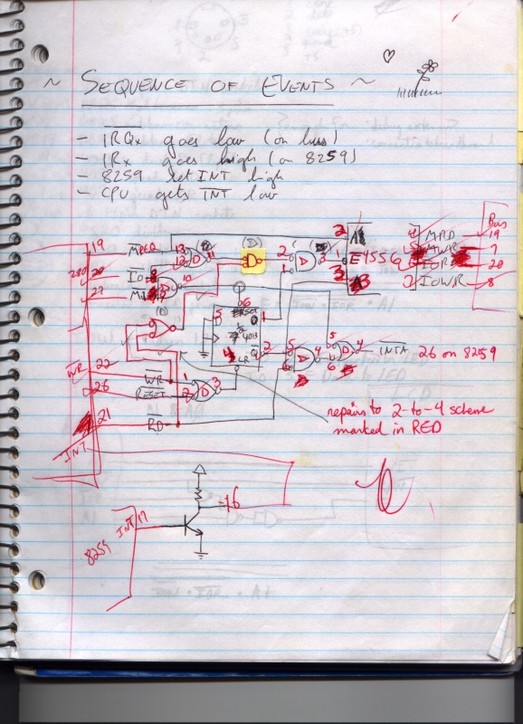
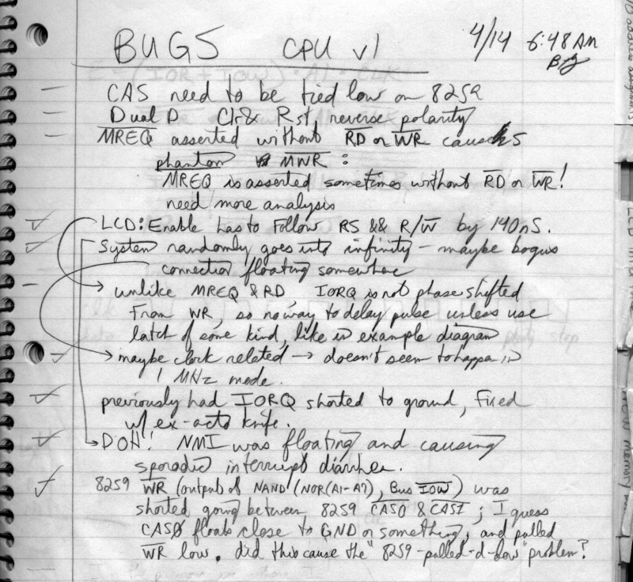

CPU Board
The CPU board has a CPU (a Zilog Z-80), an Intel 8259 interrupt controller, and some glue chips for the memory logic.

The Z-80 was based on the Intel 8080. It added enough features that several late-70's computers were based on it, including the TRS-80 line. It's available now for just a few dollars.

The Z-80 has only one interrupt pin. It's often useful to have several different interrupting devices, each having different priorities. The 8259 has four interrupt pins (IRQ0 through IRQ3 on the bus). It arbitrates incoming interrupts, funneling them to the Z-80's only interrupt pin. It also puts the number of the interrupting device on the Z-80's data bus.
The CPU has four pins that control memory and I/O: memory request (/MREQ), I/O request (/IOREQ), reading (/RD), and writing (/WR). We figured that a more useful version of these (for the other boards) would be memory read, memory write, I/O read, and I/O write. For example the memory board would only have to decode the “memory read” bus line instead of needing to combine /MREQ and /RD with extra glue logic. It turns out that this was a bad idea. See the /MREQ line on the system bus page for details of this mistake. Don't go second-guessing real hardware designers.
The CPU board is the only board that we made twice. We had prototyped (in a breadboard) the CPU and glue logic, but had never tried the 8259. We figured it was straightforward enough, and went ahead and made the PC board directly from design. Bugs in interrupt hardware can be some of the hardest to find, since it's virtually impossible to single-step through the events. We fought with flaky interrupts for the better part of a year before building a very cool logic analyzer (a few chips that piped wires' values into a PC's printer port). We then instantly found our mistake. Another testimony to the value of debugging tools.

We had misread the specs of the 8259. We thought that it latched interrupts, and in fact it doesn't. We had to redesign the whole board to get around this problem. A few other mistakes and problems with the CPU board (missing pull-up resistors, missing inverters, bad socket for one of the glue chips) made this the most painful board to get running right. For example, the problem with the bad socket was such that the chip's pin didn't connect with the socket, except if a voltmeter probe was pushing on the pin.